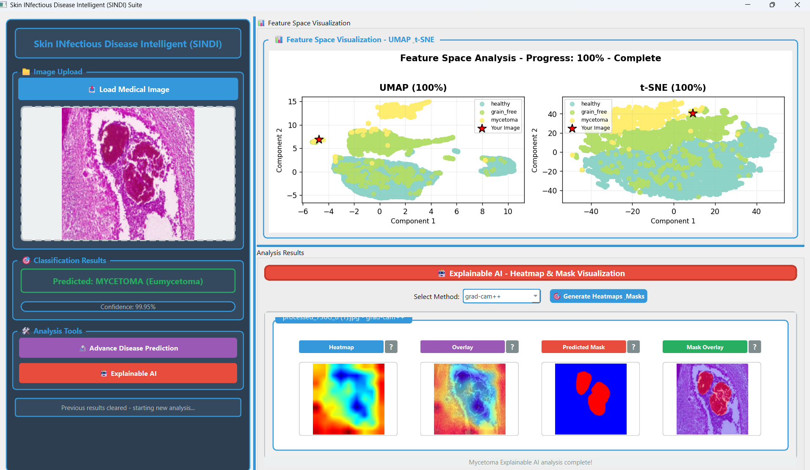
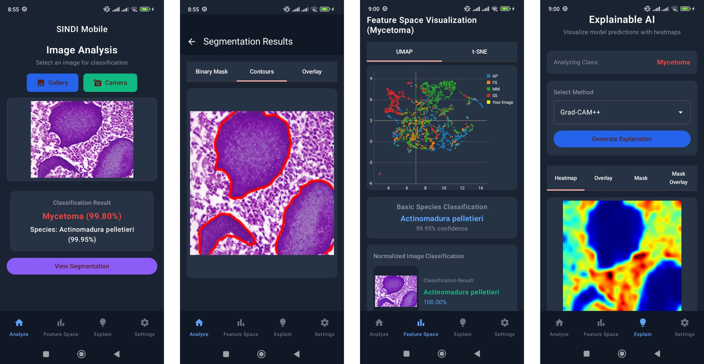
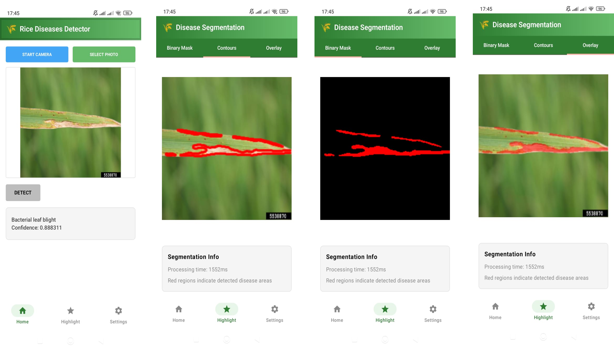

My Projects
From AI-powered medical diagnosis tools to agricultural ML systems and engineering prototypes — a mix of personal research and collaborative projects.
SINDI: An Interpretable AI Framework for the Histopathological Diagnosis of Infectious Skin Diseases Validated on mycetoma, a neglected tropical disease


Infectious skin diseases, many of them neglected tropical diseases, weigh heavily on communities with little access to specialists. Mycetoma is among the most devastating: caused by more than 70 bacterial and fungal species, it leads to severe deformity and frequent amputation, and each agent needs a different treatment. Histopathology is the standard in low-resource settings, but it is hampered by staining variability, subjective reading, and images where no microbial grain is visible.
SINDI (Skin INfectious Diseases Intelligent) is a framework designed for the histopathological diagnosis of infectious skin diseases. It combines stain normalization, deep learning, segmentation and explainable AI in one pipeline, and uses mycetoma as the case study to validate the framework. For this validation, it is built on the first histopathological mycetoma dataset from Senegal (1,324 H&E images from 71 slides, annotated with pathologists at CHNU Fann, plus 7,000 healthy skin images, publicly available) and covers four species: Madurella mycetomatis, Falciformispora senegalensis, Actinomadura pelletieri and Streptomyces somaliensis.
Five diagnostic tasks
- Phenotype and species classification: healthy vs. mycetoma reaches 99.94%; for the four species, Macenko stain normalization raises accuracy from 49% to 99.34%.
- ROI vs. non-ROI: after normalization, results on grain-rich regions and on the rest of the tissue are virtually identical, so diagnostic information is spread across the whole image.
- Grain-free images: cases with no visible grains, normally needing costly molecular tests, are classified with 98.5% accuracy.
- Semantic segmentation: pixel-level grain localization; 12 architectures and 13 encoders compared, best is UNet++ with EfficientNet-B3 and SCSE (Dice 92.2%, IoU 85.5%).
- Explainable AI: Grad-CAM, Grad-CAM++ and saliency maps converted into binary masks; best is Grad-CAM++ (Dice 91.45%, IoU 84.35%).
Everything is delivered as a desktop application (Python / PySide6) for hospital laboratories and an Android application (Kotlin / Jetpack Compose, on-device inference) for field use, both ready for clinical testing with pathologists in Senegal. Research conducted at UGB (Senegal), IRD Dakar and WPI (USA).
Semantic Segmentation of Rice Leaf Diseases A large-scale annotated dataset and multi-architecture benchmark

Most automated tools only name a rice disease; this project localizes diseased regions pixel by pixel, which opens the way to severity estimation and more precise field diagnosis. It grew out of my Master's thesis at IFRI-UAC (2017–2019), a CNN classifier with a companion mobile app.
The study covers four diseases: Bacterial Blight, Leaf Blast, Brown Spot and Tungro. It is built on RiceSeg-5932, expert pixel-level masks drawn with Label Studio for all 5,932 images of the public rice leaf collection of Sethy et al., the first complete public set of masks for that collection. Several deep learning segmentation architectures are benchmarked on it, giving the community a common reference.